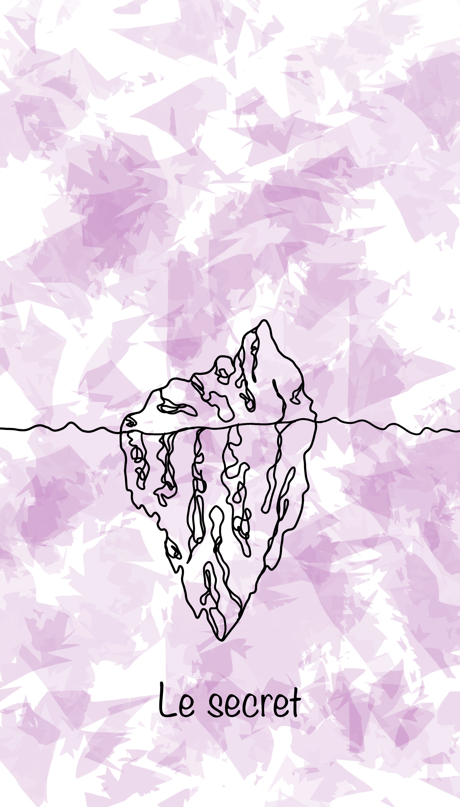
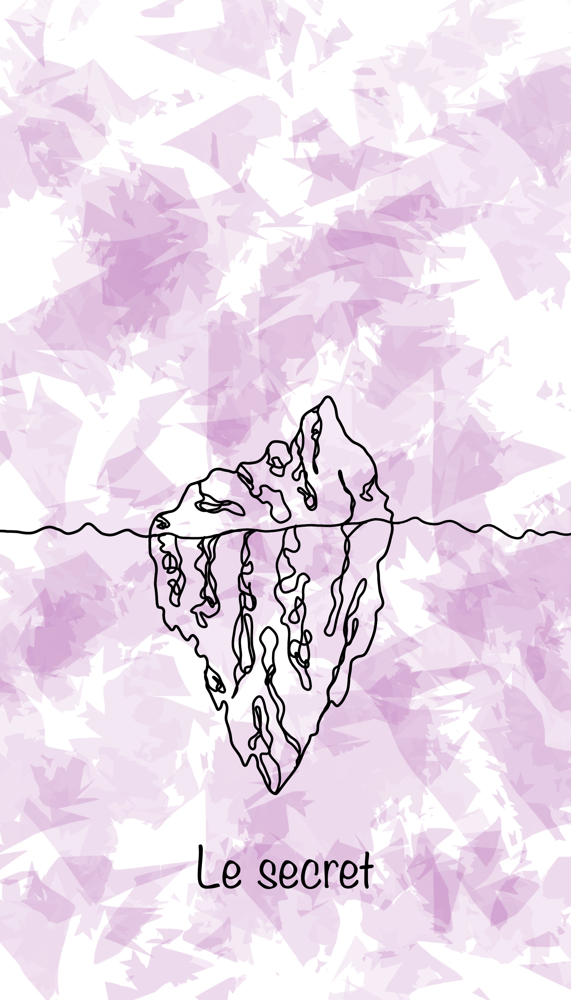
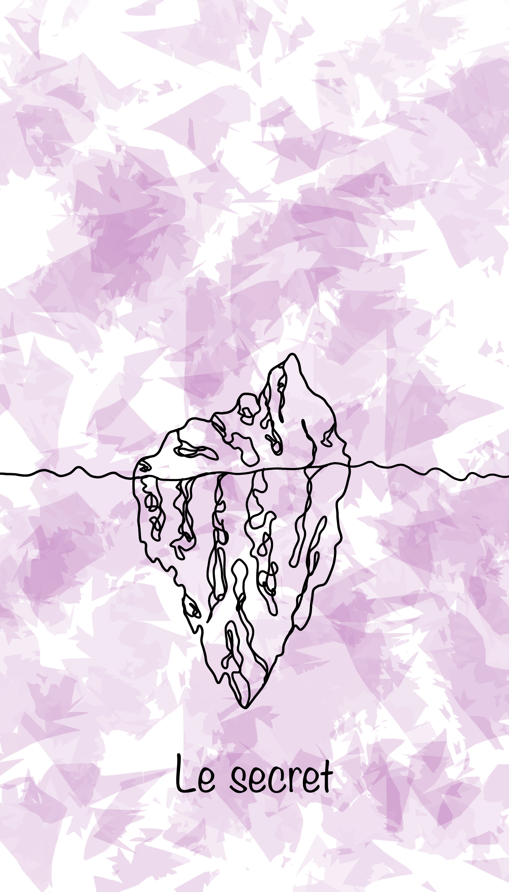
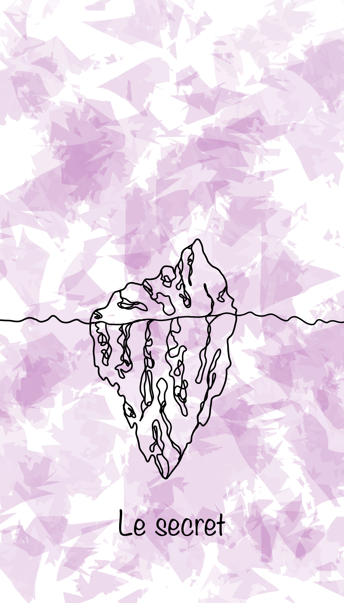

 


Nos mini chapelets sont consacrés à l'eau de lune, fabriqués par mes soins. Chaque chapelet inclut un pendentif au choix parmi : Lune, Arbre de Vie, Clé, Signe astrologique et Croix chrétienne. Chaque amulette est conçue pour apporter protection et peut être utilisée en tant que talisman personnel. Il peut également être utilisé comme un chapelet "standard" pour prier.
Prix : 15 euros + 3 euros de frais de livraison.
Pré-commander Mini ChapeletLivraison prévue courant septembre.
IMPORTANT : En cas de commande de plusieurs chapelets, veuillez me contacter par mail pour n'avoir qu'une seule fois les frais de port à votre charge.


Notre eau de lune est fabriquée à partir de l'eau de mer de la Méditerranée et d'un rituel de création d'eau de lune. Elle est fabriquée exclusivement lors des soirs de pleine lune afin de capter toute la puissance et l'énergie de la lune. Cette eau est interdite à la consommation et n'est pas faite pour être appliquée directement sur la peau. Elle est destinée à consacrer des objets ou protéger des habitations en scellant les entrées (portes et fenêtres).
L'eau de lune sera fournie avec une petite pipette pour une manipulation facile. Afin que cette eau fonctionne au mieux, il est important que vous y ancriez une intention de protection sincère lors de son utilisation.
Prix : 12 euros + 3 euros de frais de livraison.
Pré-commander Eau de luneDisponible en fiole de 12ml.